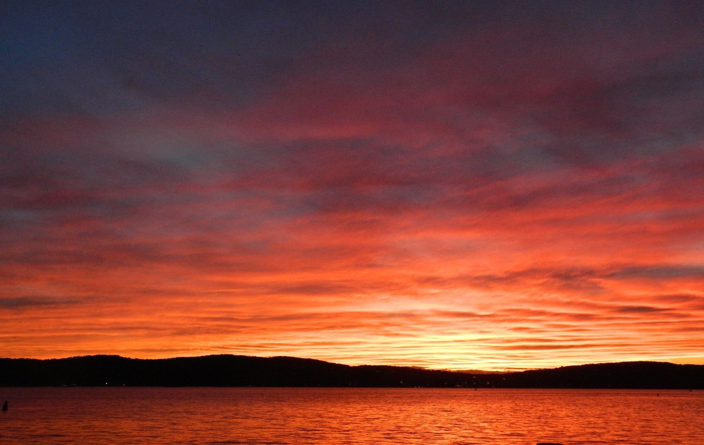
Before our major sightseeing trips began, we spent some time exploring the beautiful local areas around White Plains. We visited Sleepy Hollow and Tarrytown, which are famous for their rich history and their location right on the banks of the Hudson River. The atmosphere here is very peaceful with old, well-preserved buildings and historic sites. We also spent time on the Bronx River Path, which is a lovely green trail used for walking and cycling. The path follows the river and is surrounded by lush trees, providing a very calm and refreshing environment for a morning walk. It was a great way to experience the natural beauty of the suburbs before heading into the bustling city.
03/09/16 — New Jersey: Krishnanji TempleNew Jersey Krishnan temple is around 120 miles away from Revathy’s home. It took around one hour and thirty minutes to reach this temple. Here, normally on highways, cars are driven at high speeds between 70 - 80 miles/hr (100 - 120 km/hr). This temple is too good and beautiful. Guruvayur Krishnan, Lord Ganesh, Lord Murugan, Balaji, Hanuman, Maha Lakshmi, and Swamy Iyappan idols are there. Each one has a separate sannathi as well. Within the temple premises, a canteen is also there. Indian foods like Pongal, vada, dosa, idli, and puri are sold here. After visiting this beautiful temple, we returned home around 10 pm.
04/09/16 — New York City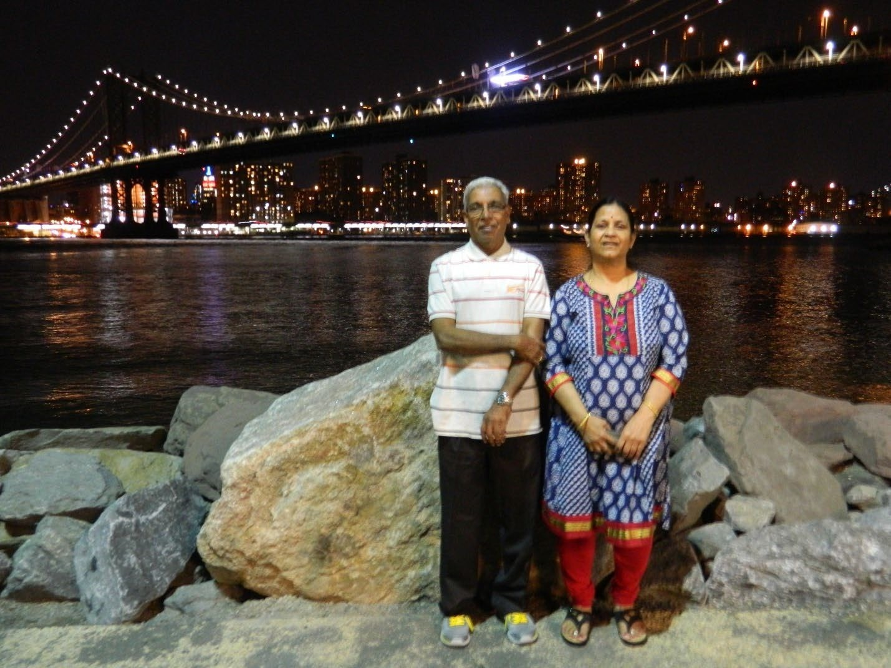
Since there was no sign of rain or storm as predicted by weather reports, Pavan suggested a New York trip. Actually, we left home late in the evening around 7:30. It is an hour's drive from their home. New York City is colorful. We saw the Brooklyn Bridge, Manhattan Bridge, World Trade Center, and Empire State Building; they are all decorated with colorful lights. We were roaming around the East River bed. From the river bed, we also could see the Statue of Liberty, which is quite far away from that place.
08/09/16 — Statue of Liberty & One World Trade Center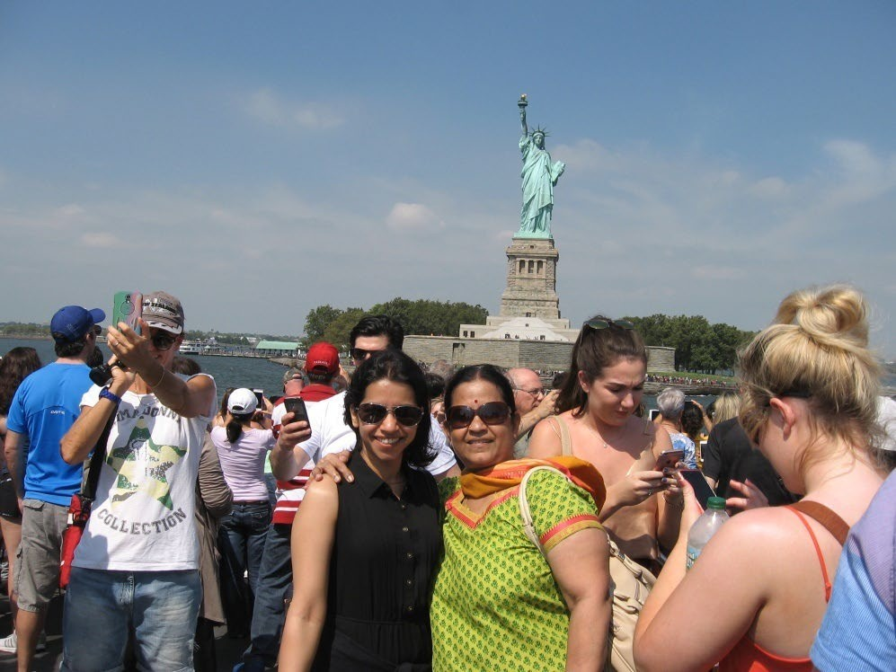
Revathy took a day off at work to take us sight seeing to New York. By 9:30 am, we left home and reached White Plains Station. We took the train to New York. It is around a 45-minute journey. The New York station is called Grand Central. The train fare is $11. From Grand Central Station, there are subways to go to different places. Proper display boards are there to direct you to the correct subway to catch the correct train to go to other places.
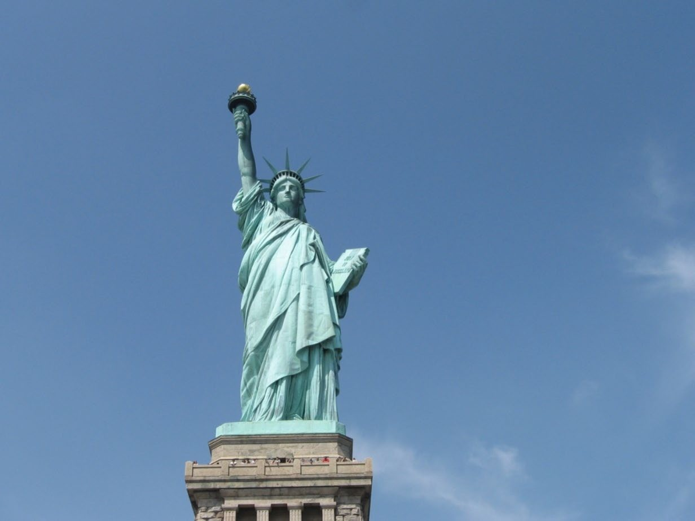From Grand Central, we took the subway to reach Bowling Green Station. This station is four stations away from Grand Central. From there, we took a cruise to Liberty Island. The cruise travel is about 30 minutes. We went to the top deck of the cruise and took photos. Liberty Island is a small patch of land in the sea. Here, the famous Statue of Liberty stands. The statue is made out of bronze, so it has turned into a sort of apple-green color. The gigantic statue is beautiful. The location where it is situated is amazing. Being on a small island, this statue is not interrupted by any building. The statue, surrounded by the blue sea, looks marvelous. The day was memorable to me. I never dreamt that one day my younger daughter would land here and take us to these wonderful places. My heart was so full from the love we received that I found it difficult to hold back tears of pure gratitude. We roamed around this place and purchased some tiny mementos. Also, we had ice cream and some fruits there. Then, by another cruise, we returned to Ellis. We walked to an Indian restaurant. On the way, we saw the Big Bull statue on the main street.
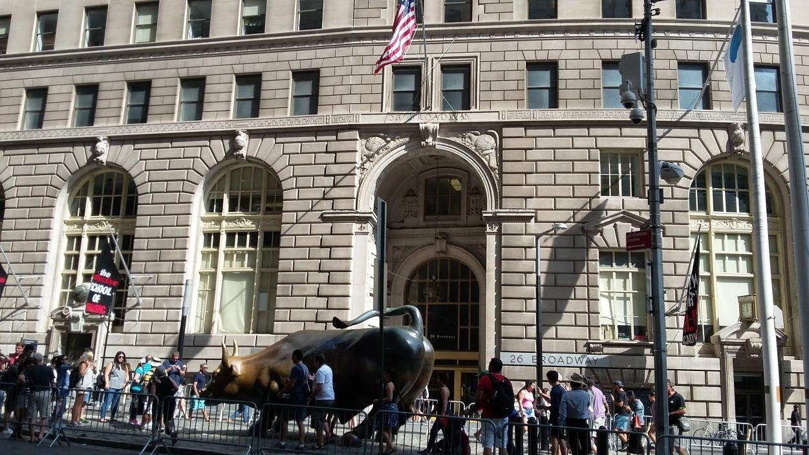
After finishing lunch, we walked to ‘One World Trade Center’. The ticket cost for each person was $36. There was a security check; they thoroughly checked all the bags we carried. This building is considered one of the tallest buildings in the USA, with one hundred floors. The top floor is the ‘One World Observatory’. The lift goes very fast, taking less than a minute. From the 100th floor, one can see the whole of New York! The East River, Hudson River, bridges over the Hudson and East Rivers, Manhattan, the Statue of Liberty, Governor’s Island, and the Empire State Building are all visible. The Hudson River is between New York and New Jersey. From Grand Central, there are trains to New Jersey that go through a tunnel under the Hudson River. After the visit to the World Trade Center, we saw the 9/11 Memorial—a square place with fountains where the names of victims of the disaster are engraved. Some Indian names are also there.
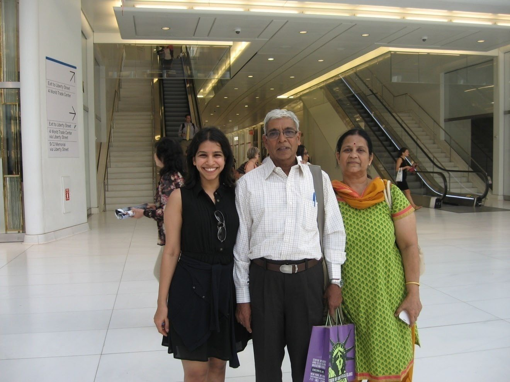
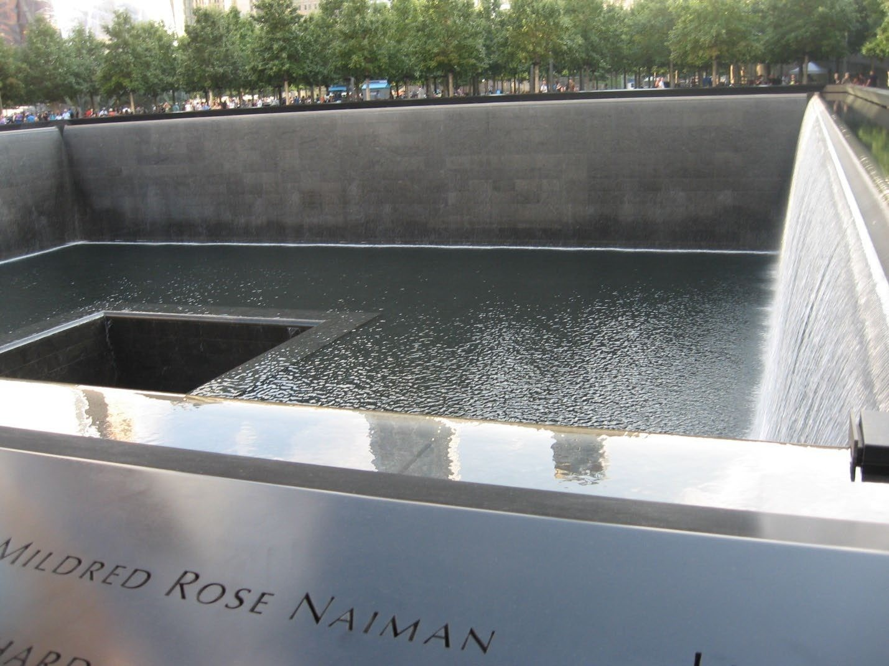
Then we took a subway from Fulton Street to Grand Central. The train from Grand Central to White Plains was almost empty; we could sit comfortably and reached White Plains around 7:30 pm. After we reached home, we were surprised to see that Pavan had prepared a delicious dinner for us.
10/09/16 — Washington DC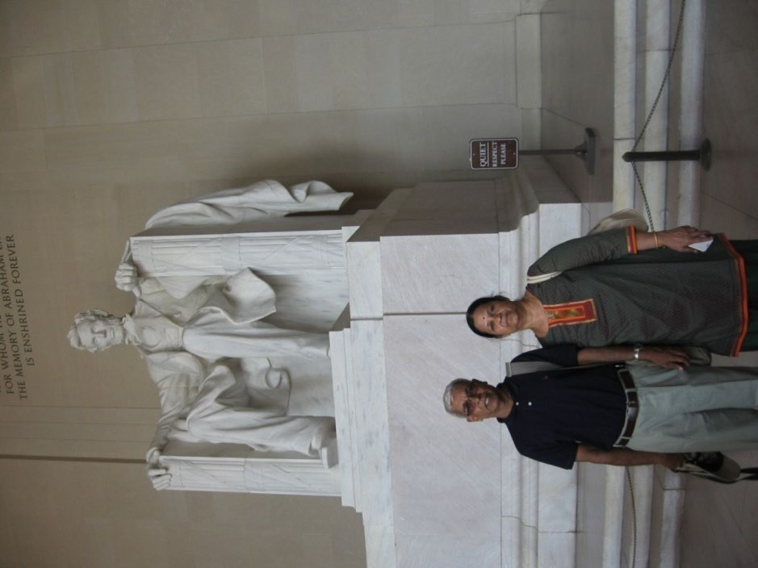
Washington DC is something like a Union Territory of our country; it does not come under any state. Law and order is controlled by the center directly. Washington DC is 260 miles away from Revathy’s place. It takes about 5 hours by road to reach. We left by 6:15 pm and had a break for 45 minutes for dinner. We crossed New York, New Jersey, Newark, and Philadelphia, reaching Washington DC almost at midnight. We stayed with Pavan’s friend, Gowrish. Revathy and Gowrish were college mates when they did their MS at Dayton.
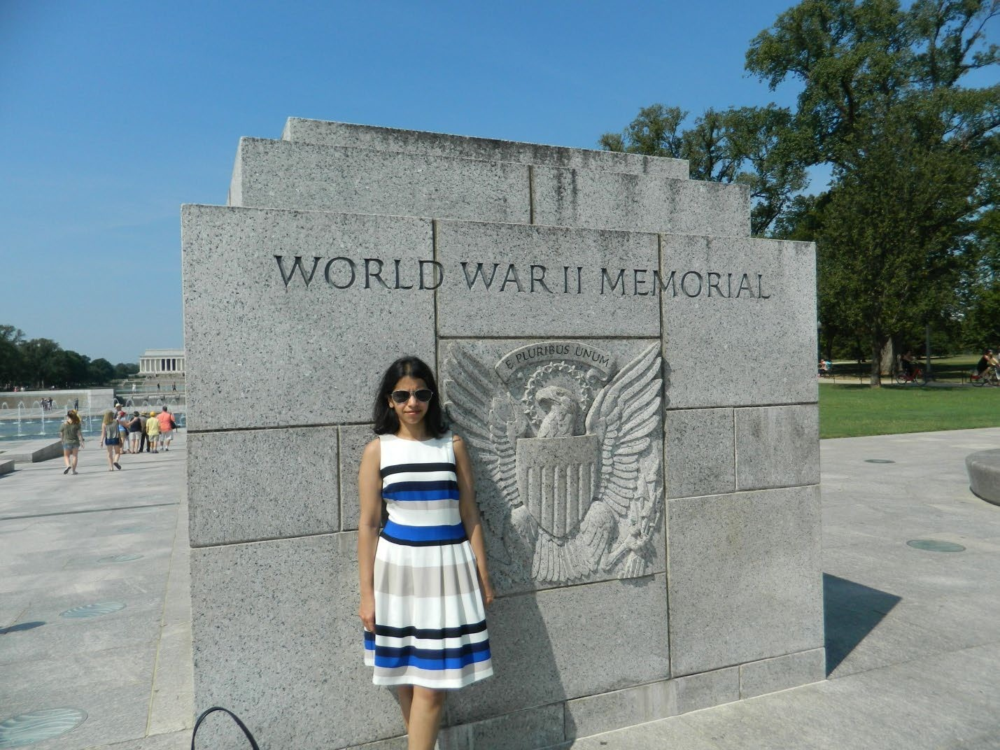
In the morning, we left around 9:00. We had coffee and some cakes at Starbucks. Pavan dropped us at the Abraham Lincoln Memorial. With Revathy, we walked to all the nearby places. During Abraham Lincoln's time, the US virtually faced a civil war over slavery. Lincoln led the northern states and was elected the 16th President of the US, putting an end to the slavery system. In Washington DC, the weather was quite hot; we actually found it difficult to walk. After this memorial, we saw another memorial created for the brave soldiers who sacrificed their lives during the Second World War. Next to this was the memorial for the first President of the U.S.A., George Washington—a tall pillar built to honor him.
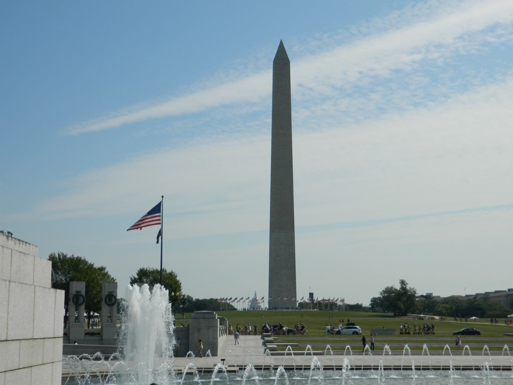
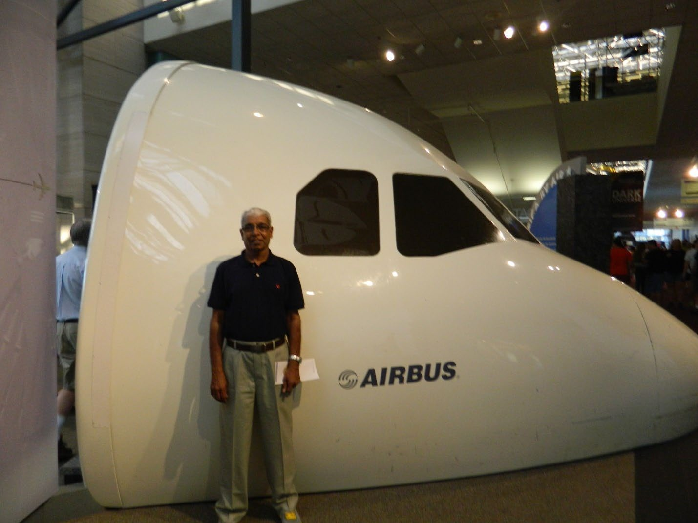
After these memorials, we all went to an Indian restaurant with Pavan. After lunch, Revathy and Pavan left us at the Air and Space Museum. After a security check, we entered and saw models of airplanes from the Wright brothers' time to the latest planes, as well as spaceships and rocket models. We spent an hour here. We were then dropped at the National Museum of Natural History, where processed sea animals, dinosaurs, and various birds are exhibited, alongside diamond processing and a butterfly garden. In Washington DC, we saw the movie 'Sully' in an IMAX theater, based on the true story of the 2009 Hudson River landing. The movie was thrilling from beginning to end. Since we were walking the whole day and Pavan had a long drive the next day, we returned to his friend’s place after dinner. While returning, we saw the beautiful, glittering US Capitol.
11/09/16 — White House & New Jersey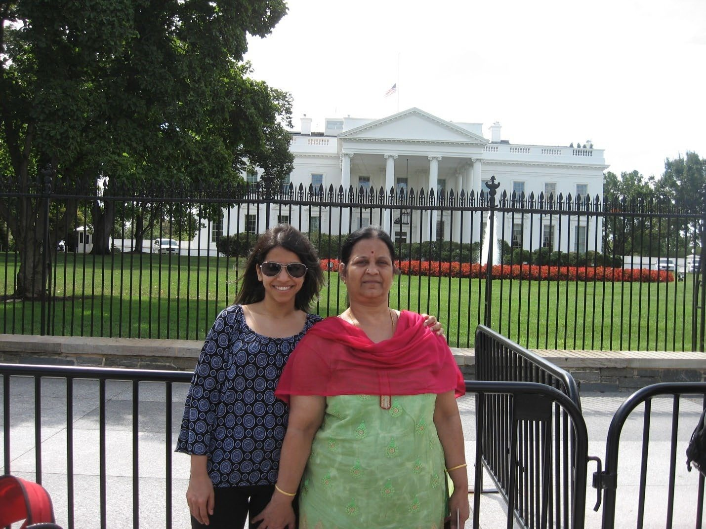
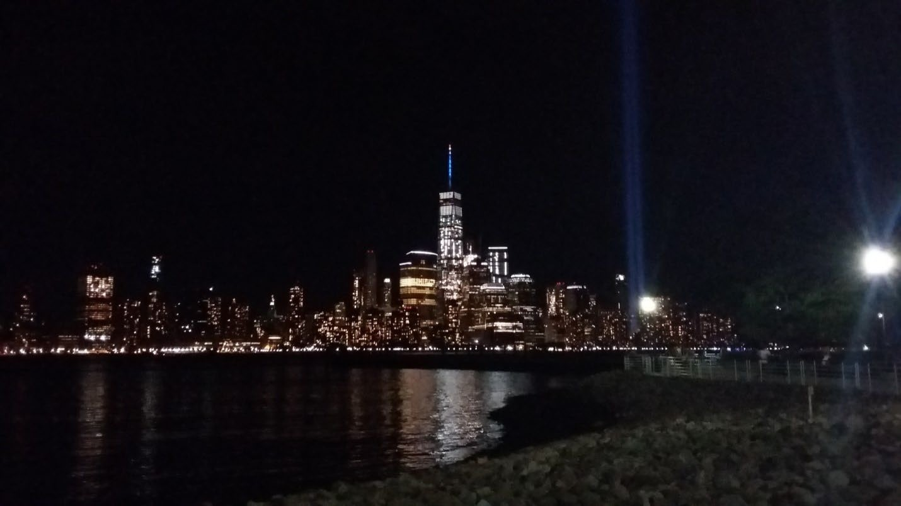
In the morning, we started early to see the White House. It was a bright day and the weather was good. After seeing the White House, we proceeded to New Jersey to visit Sruthi and Ashvin. We reached their home around 6 pm. Sruthi prepared dinner—bisibelebath with raitha. Nobody in America forgets the disaster of 11th September 2001. Every year on that day, people remember the victims. Special lighting arrangements are made, and two beams of light are projected into the sky, believed to show the path to Heaven for the victims. From their house, we went to see these lighting arrangements from the New Jersey side.
17/09/16 - 18/09/16 — Niagara Falls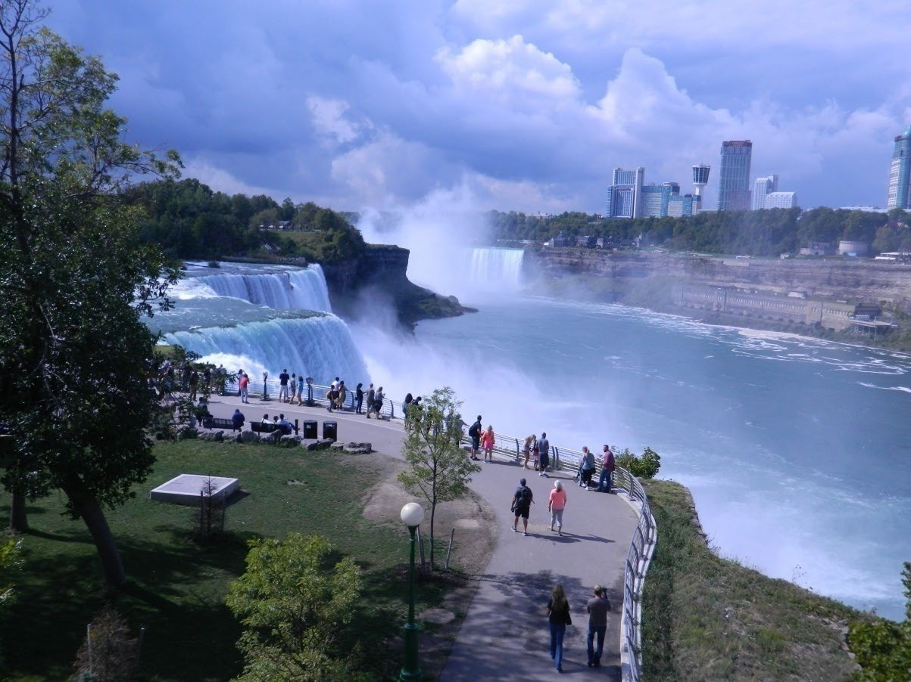
Pavan and Revathy planned a Niagara trip for us. His friend Nikhil and his wife Priyanka also joined us. Pavan hired a seven-seater car. Uma from Seattle arrived on the 17th morning after a 5-hour flight. After a breakfast of ‘sevai’, we left around 12 pm. Niagara Falls is in Buffalo, the second-most popular city in New York State, also called the Queen City. It is an 8-hour drive from Revathy’s place. We took lunch at the home of one of Pavan’s university mates along the way. Despite heavy rain, Pavan and Nikhil alternately drove and reached the falls around 8 pm. We saw beautiful lighting over the falls and the decorated tall buildings on the Canadian side. Fortunately, the rain stopped while we roamed around taking photos. After seeing the falls at night, we had dinner at an Indian hotel and stayed at a local hotel.
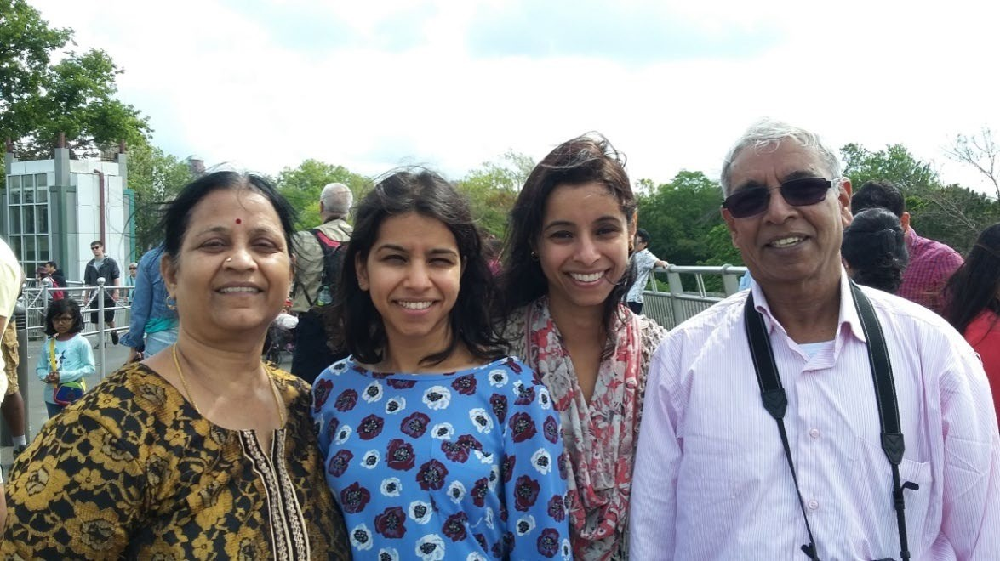
On 18/09/16, we left the hotel around 10:30 am after breakfast. We reached the falls and boarded the cruise. There are three waterfalls here—two in Canada and one in the US. Before boarding, they gave us raincoats. We went to the top deck and were taken so close to the falls that we were almost fully drenched. It was terrific to see the huge falls. After the 20-minute cruise, we spent more time there and Revathy bought some souvenirs. We started our return journey by noon, stopping at Seneca Lake—one of the eleven Finger Lakes.
Seneca lake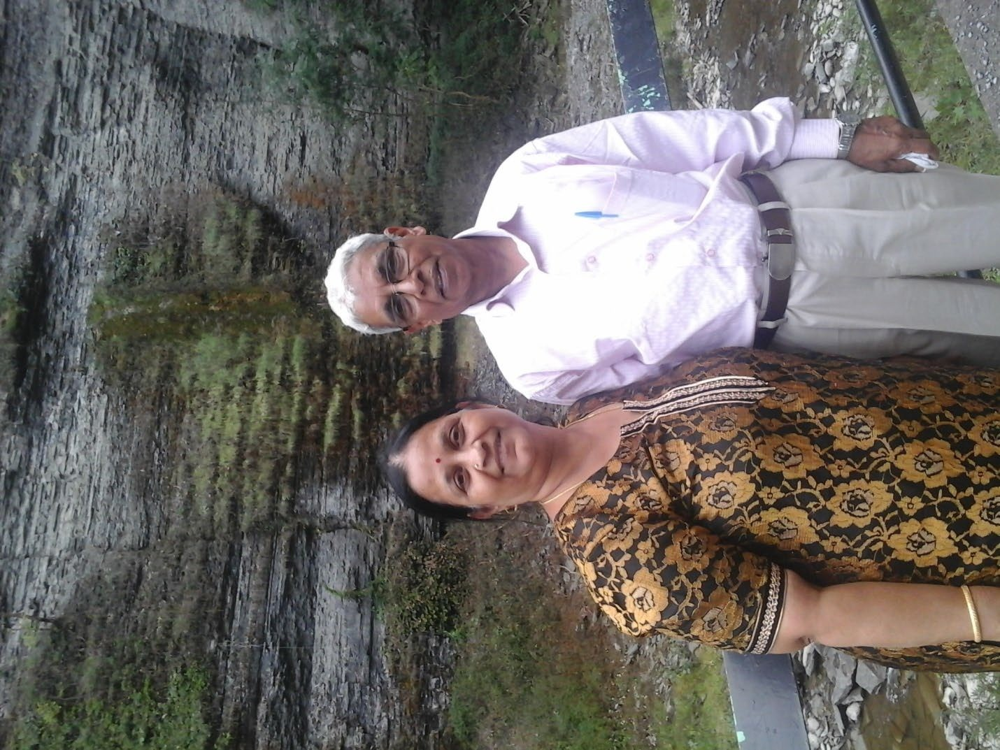
We also stopped at 'Watkins Glen' (Water Works Wonders), a hill with waterfalls, where we climbed a distance for photos. The return journey involved heavy rain, but we reached home around midnight after a long 9-hour drive.
22/09/16 — Governors Island & Empire State Building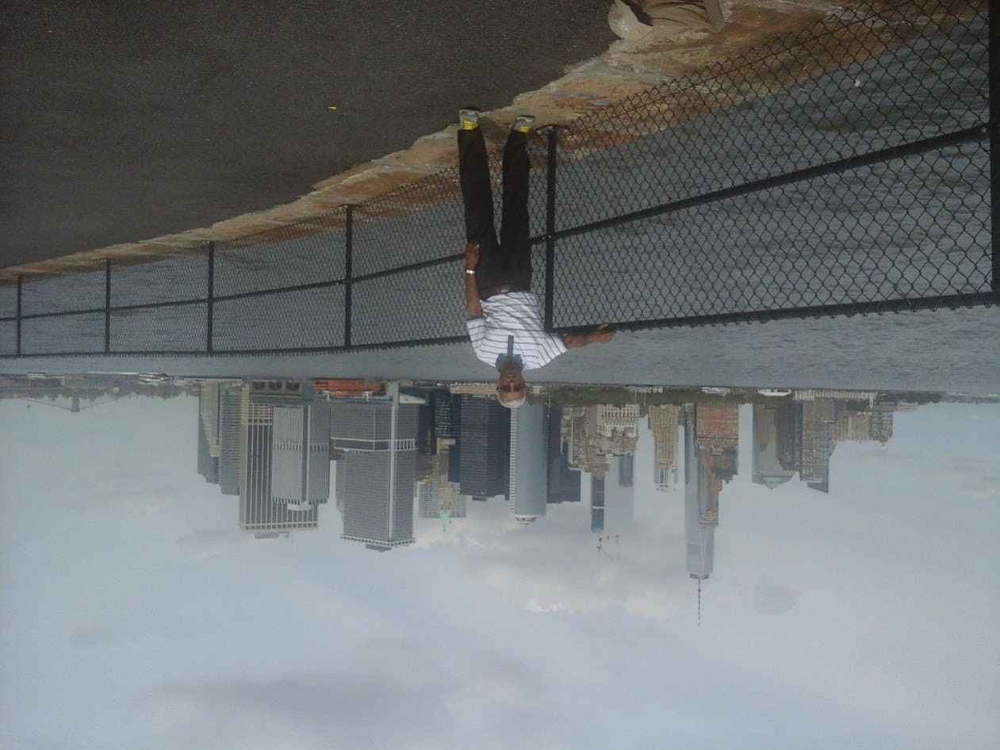
Jinu took us to Governors Island. We reached Grand Central by train and took the subway to Bowling Green. The ferry to the island took about 15 minutes. It is a small island with government offices and an art museum. From here, we could see the Statue of Liberty, Manhattan Bridge, Brooklyn Bridge, Empire State Building, World Trade Center, and George Washington Bridge. We walked quite a distance and ate the lunch we had packed. After returning by ferry, we had coffee at Starbucks and took a cab to Rockefeller Center. We decided to skip the Rockefeller observatory due to a 2-hour wait and went to the Empire State Building instead.
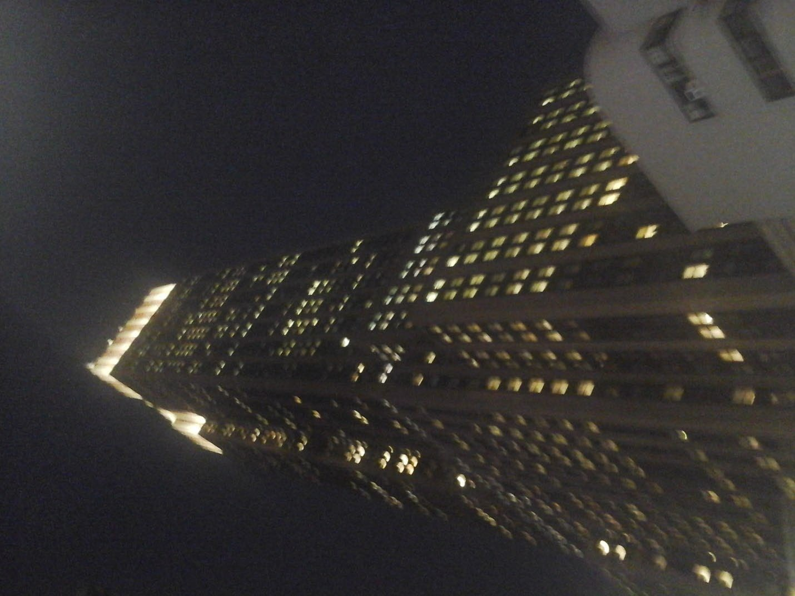
The Empire State Building has 102 floors. We stood in the queue and reached the 80th floor for a view, then took another lift to the 86th floor. It was almost 9 pm, and the glittering New York City was spectacular. We walked around the entire floor to see the view. Afterward, we took a cab to Grand Central, where Revathy showed us her office and her former residence in Manhattan. We reached home by 10 pm to a delicious dinner of rice, sambar, and rasam prepared by Pavan.
01/10/16 — Kent Falls, Connecticut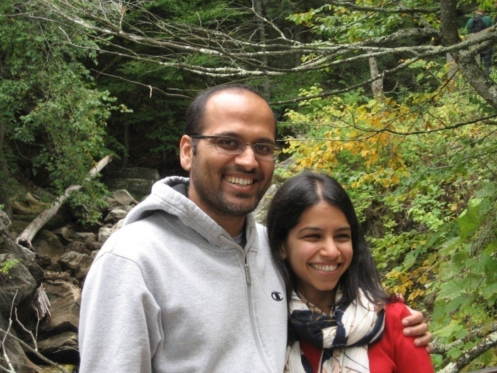
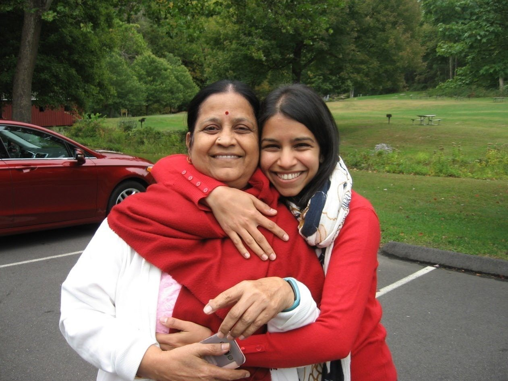
Pavan hired a bigger car since his parents had arrived. Ashvin and Sruthi also accompanied us. Kent Falls is about a 2-hour drive. We left around 10 am and spent an hour walking on the hill. The natural scenery was excellent, with leaves changing to yellow and deep red. After our walk, we had the lunch we brought from home. We stopped at Starbucks and an Indian store on the way back, arriving home around 7 pm.
02/10/16 — Swamy Narayan Temple, Robbinsville NJ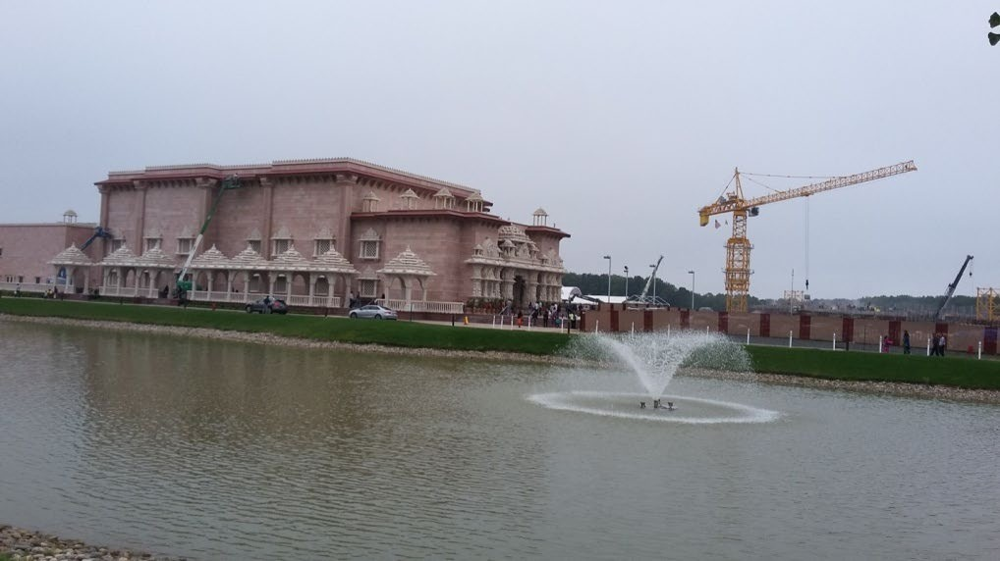
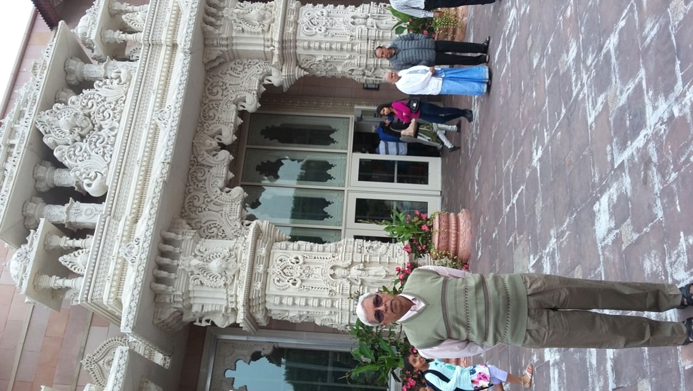
The temple is about 2 hours from White Plains. We arrived by 2:30 pm. The temple is made of marble, and beautiful lighting enhances its beauty.
Preethi’s home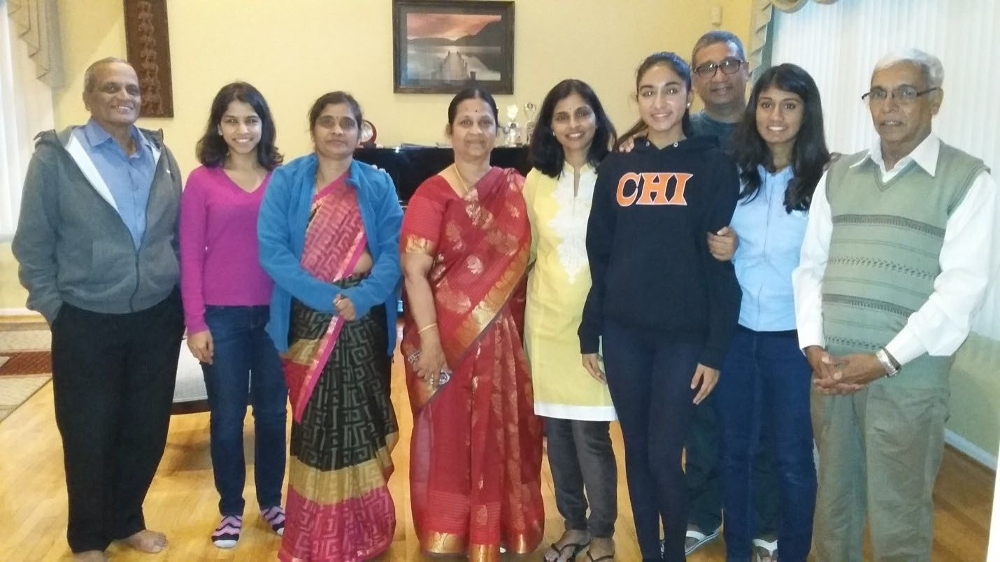
On the way back, we stopped at Preethi’s home for an hour. We were overwhelmed by their cordiality and felt very good seeing her and her family.
07/10/16 — New York Garden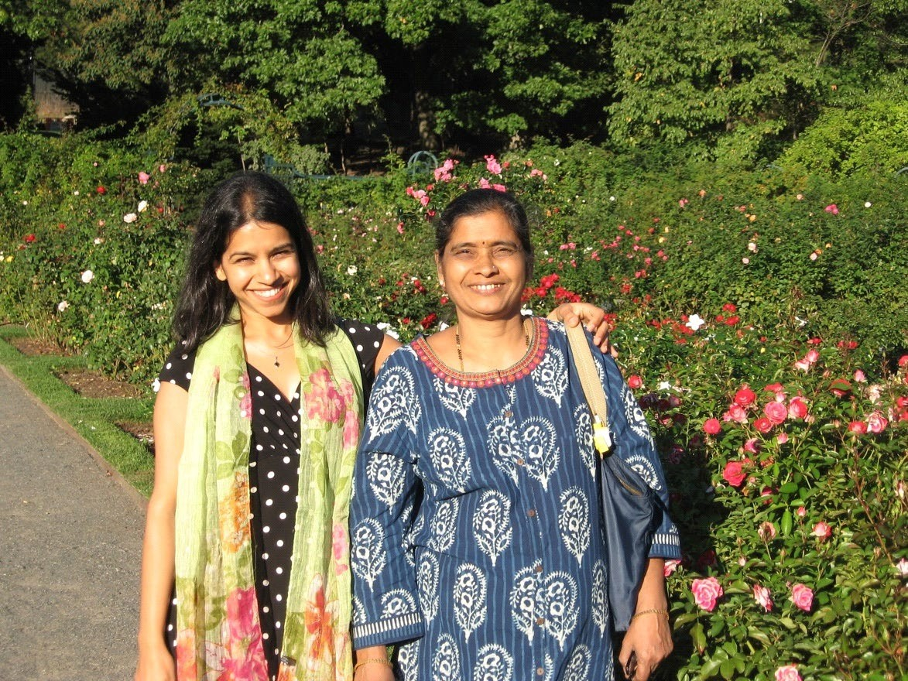
From White Plains, we took the train to the Botanical Garden Station. It is a huge garden of about 250 acres. There is an entrance fee of $18 with a senior citizen concession. A motorized tram moves around the garden, allowing you to get off and on as you like. We saw a glass house with rare flowering plants, a rose garden, and a home garden where vegetables from different countries are grown. It reminded us of Sim’s Park in Nilgiris.
08/10/16 — Bear Mountain, New York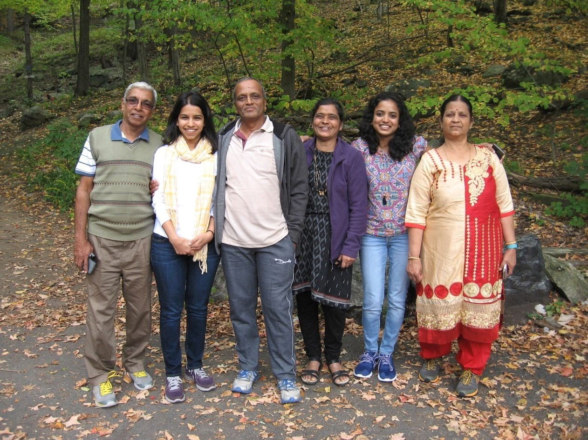
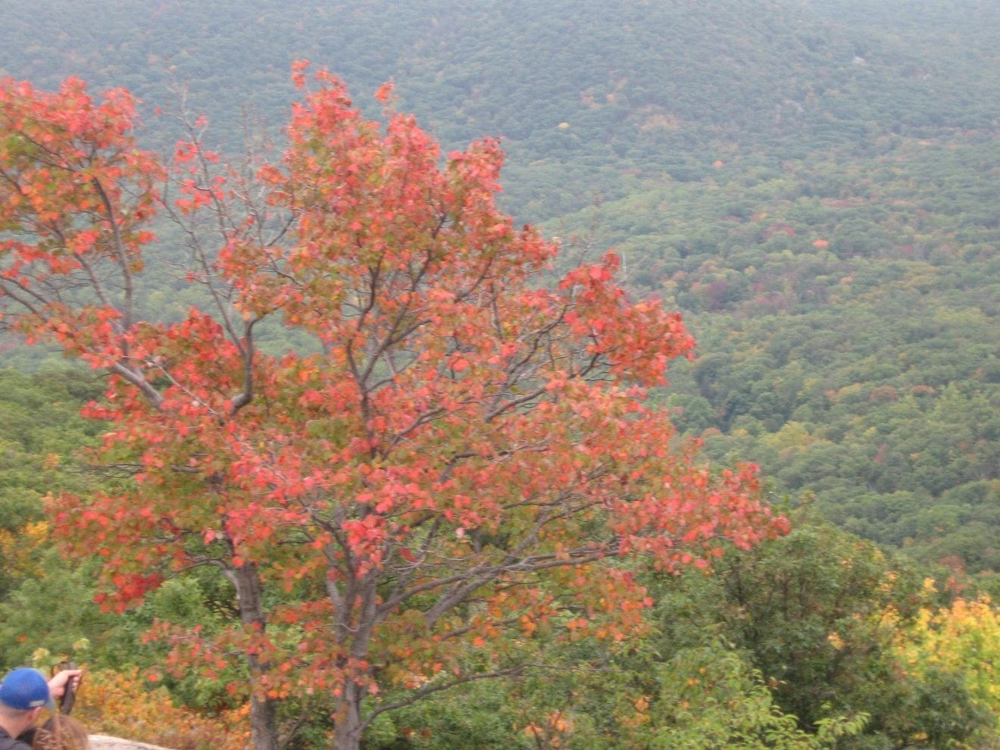
This is about a 2-hour drive from White Plains. October is a special season to visit as the leaves change to yellow, orange, and brick red before falling. It looks as if someone is spreading colorful flowers from the sky. We left after lunch and stopped at several viewpoints to see the valley and the lake. The colorful trees reflecting in the lake were beautiful. From the peak, the surrounding mountains, valleys, river, and railway tracks looked wonderful. We spent an hour there and returned home by 8 pm. Pavan made a tasty meal with spicy masala and salads to end the day.